O Insper conta com uma equipe dedicada ao trabalho colaborativo junto às coordenações acadêmicas em prol do Desenvolvimento do Ensino e Aprendizagem – equipe DEA, vinculada à Diretoria de Assuntos Acadêmicos, dirigida por Irineu Gianesi.
Entre final de 2015 e início de 2016, a equipe de Desenvolvimento de Ensino e Aprendizagem do Insper passou por alguns aprimoramentos:
Escopo de Atuação do DEA
O DEA dividiu-se em frentes de trabalho em Ensino e Aprendizagem, as quais reportam diretamente ao Conselho Deliberativo do Insper:
Experiência de Aprendizagem
As ações de Inovação têm como objetivo principal apoiar os esforços de aprimoramento dos programas de ensino, de acordo com a demanda das coordenações acadêmicas em função dos resultados das avaliações de qualidade.
Apoio à Gestão e Desenvolvimento Docente
As ações de desenvolvimento do corpo docente decorrem das necessidades identificadas nas avaliações da qualidade, visando ao aprimoramento contínuo do professor por meio de cursos de formação, seminários, workshops e atendimento individual e personalizado.
Garantia da Qualidade
A Avaliação do processo de ensino e aprendizagem se dá de forma independente. Compara a prática frente aos padrões de excelência. Utiliza diferentes indicadores e formas de avaliação, seja pelo próprio DEA ou por especialistas externos ou internos ao Insper.
Princípios de Atuação do DEA
Seis princípios norteiam as atividades do DEA:
Foco no Aluno
O foco da atuação do DEA é o efetivo aprendizado do aluno, objetivo que norteia todas as ações de desenvolvimento e inovação.
Gestão por Evidências
O DEA trabalha sempre com base em evidências, buscando avaliar a efetiva contribuição das ações de melhoria, desenvolvimento e inovação para o aprendizado do aluno.
Colaboração
A garantia da qualidade somente pode ser alcançada por meio de uma atuação colaborativa entre o DEA, as direções e coordenações acadêmicas e os professores, que compartilham dos mesmos objetivos de excelência no ensino.
Professor como Elemento-Chave
O professor é o elemento-chave da gestão da aprendizagem com base em evidências e da adoção de inovações no ensino; nele são centradas todas as ações de desenvolvimento.
Melhoria Contínua
Metas sempre realísticas são definidas para curto e médio prazos, mas elas são continuamente revisadas buscando níveis mais exigentes ao longo do tempo, visando à excelência.
Construção do Conhecimento
Ênfase na pesquisa, análise, validação e registro das experiências de ensino e aprendizagem do Insper para construção do conhecimento em educação de excelência.
Redesenho da Equipe DEA
Em 2016, passaram a integrar a equipe DEA duas coordenadoras especialistas em ensino e aprendizagem – Débora Mallet e Juliana Massi, cada qual responsável por uma frente de atuação da área. Além disso, as atribuições de analistas e auxiliares foram realinhadas com base no novo desenho. Veja a composição atual da equipe:
Débora Mallet Pezarim de Angelo
Débora é atraída pelo lado objetivo das coisas. Na faculdade, em aulas de literatura ou gramática, se perguntava “Mas como é que isso vai chegar na sala de aula?”. Tem amor pela literatura, sua maior fonte de inspiração. Foi desenvolvendo a docência e a assessoria educacional em paralelo, participando de projetos públicos da Secretaria de Educação de SP e privados. Tem uma filha linda e uma persa adorável – Giulia e Amélie (sim, a do filme), respectivamente. Participa dos projetos sociais Bentinha e Paulo Honório (PH), da editora Cronópios.
Atuação no DEA
Gestão e Desenvolvimento do Corpo Docente
60%
Avaliação do Aprendizado e Garantia da Qualidade
100%
Inovação e Tecnologias Educacionais
80%
#justa#corajosa#instrospectiva
Ocupação
Coordenação DEA – Frente de Avaliação do Aprendizado e Garantia da Qualidade
Quando entrou no Insper
Dezembro/2015
Formação
Doutora em Educação pela FE-USP
Mestre em Educação pela FE-USP
Licenciada em Letras (Português) pela FFLCH-USP
Bacharel em Letras (Português e Francês) pela FFLCH-USP
Pontos fortes
Avaliação da Aprendizagem, Metodologias de Ensino e Aprendizagem, Formação do Leitor
Hobbies
Cuidar do pet, Viajar, Conhecer novos restaurantes
Quando criança queria ser...
Bióloga, Policial, Psicóloga
Livros que lê
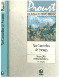
No Caminho de Swann Marcel Proust
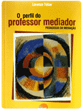
O perfil do Professor Mediador Lorenzo Tébar
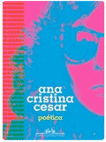
Poética Ana Cristina Cesar
Juliana Machado Massi
Juliana é apaixonada por educação e processos de inovação em IES. Embora já tenha advogado, foi na educação que encontrou o seu propósito de vida. Tem bastante experiência na gestão acadêmica e formação de professores, sobretudo em metodologias ativas e desenvolvimento da educação empreendedora por meio de projetos com alunos e professores. Nas horas vagas, se diverte brincando com o seu pet – Nick Lauda, e em maratonas Netflix com o seu noivo. Neste ano pretende retomar suas aulas de bateria.
Atuação no DEA
Gestão e Desenvolvimento do Corpo Docente
100%
Avaliação do Aprendizado e Garantia da Qualidade
60%
Inovação e Tecnologias Educacionais
80%
#inovadora#humana#determinada
Ocupação
Coordenação DEA – Frente de Apoio à Gestão e Desenvolvimento Docente
Quando entrou no Insper
Março/2016
Formação
Mestre em Direito Econômico e Socioambiental pela PUC-PR
Especialista em Metodologias ativas de Aprendizagem pela UTP / LASPAU
Bacharel em Administração pelo Centro Universitário Eurípides de Marília-SP
Bacharel em Direito pelo Centro Universitário Eurípides de Marília-SP
Pontos fortes
Gestão Acadêmica, Formação de Professores e Design Thinking
Hobbies
Tocar bateria, Assistir Netflix, Ficar com o dog (Nick)
Quando criança queria ser...
Pediatra, Professora, Cantora
Livros que lê
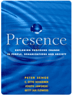
Presence Peter Senge Otto Scharmer
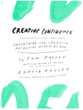
Creative Confidence Tom Kelley David Kelley
Trilogia Millenium Os homens que não amavam as mulheres Stieg Larsson
André Luiz Lourenço
André é bem organizado e comprometido com os resultados do DEA. Atua há mais de 10 anos em suporte técnico de TI, sempre focado em resolver os problemas e atender bem os usuários. Atualmente está cursando Pós-Graduação na área de tecnologia educacional para se aprimorar e agregar ainda mais valor ao atendimento que presta aos professores. É apaixonado pela sua família, principalmente pela sua filha de dois anos, Isabella.
Atuação no DEA
Gestão e Desenvolvimento do Corpo Docente
20%
Avaliação do Aprendizado e Garantia da Qualidade
20%
Inovação e Tecnologias Educacionais
100%
#organizado#comprometido#flexível
Ocupação
Analista Jr. de Suporte
Quando entrou no Insper
Janeiro/2014
Formação
Cursando Pós-Graduação em Tecnologias de Aprendizagem no SENAC
Bacharel em Ciências da Computação pela Universidade Adventista de São Paulo
Pontos fortes
Suporte Técnico, Análise e Resolução de Problemas
Hobbies
Ficar com a família, Assistir filmes, Ouvir música
Quando criança queria ser...
Piloto F1, Veterinário, Músico
Livros que lê
Interação mediada pelo computador Alex Primo
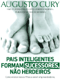
Pais Inteligentes Formam Sucessores, Não Herdeiros Augusto Cury
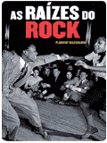
As raízes do Rock Mazzoleni Florent
Ariel Nunes Tosso
Ariel é um jovem aprendiz que busca sua vocação na vida. Seu objetivo é trabalhar com artes e se desenvolver profissionalmente nessa área.
Atuação no DEA
Gestão e Desenvolvimento do Corpo Docente
60%
Inovação e Tecnologias Educacionais
20%
#atento#organizado#quieto
Ocupação
Jovem Aprendiz
Quando entrou no Insper
Março/2016
Formação
Bacharel em Publicidade pela Universidade Anhembi Morumbi (curso trancado)
Colégio Pauliceia: colegial
Pontos fortes
Detalhista, Atento, Esforçado
Hobbies
Desenhar, Escrever, Montar quebra-cabeças
Quando criança queria ser...
Cineasta, Médico, Paleontólogo
Livros que lê
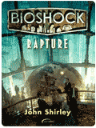
Bioshock Rapture John Shirley
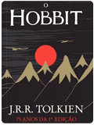
O Hobbit J. R. R. Tolkien
1808 Laurentino Gomes
Gabriel Mendes Santana
Gabriel é, acima de tudo, uma pessoa que não quer perder a leveza da juventude. Ama tirar fotos, ouvir música, ler, assistir seriados, aprender, ter amigos, falar sobre sociologia, cultura pop (pela qual é fascinado) e conhecer coisas novas. Está na faculdade tentando sobreviver à correria e ao caos - necessário - que é São Paulo. Está superanimado pelo que há de vir.
Atuação no DEA
Gestão e Desenvolvimento do Corpo Docente
60%
Avaliação do Aprendizado e Garantia da Qualidade
60%
Inovação e Tecnologias Educacionais
20%
#amigo#humano#introvertido
Ocupação
Auxiliar de Ensino e Aprendizagem
Quando entrou no Insper
Novembro/2014
Formação
Cursando bacharelado em Administração na FECAP
Pontos fortes
Gestão, Trabalho em equipe
Hobbies
Ouvir música, Fotografia, Ler livros
Quando criança queria ser...
Veterinário, Super-Herói
Livros que lê
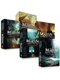
As Crônicas de Gelo e Fogo George R. R. Martin
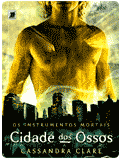
Os Instrumentos Mortais – Cidade dos Ossos Cassandra Clare
Jogos Vorazes Suzanne Collins
Giovanna Spada de Lima
Giovanna sempre se interessou muito por tecnologia (por conta das possibilidades que oferece) e educação (por acreditar que esse é nosso maior patrimônio). Não por acaso veio trabalhar aqui no Insper, unindo as duas coisas! Nas horas vagas, está planejando viagens – pessoais ou para os amigos – viajando, brincando com a Frida, conhecendo restaurantes ou cozinhando. Esse ano vai tirar seu blog de viagens do papel e se inscrever em um curso de arco e flecha!
Atuação no DEA
Gestão e Desenvolvimento do Corpo Docente
40%
Avaliação do Aprendizado e Garantia da Qualidade
20%
Inovação e Tecnologias Educacionais
100%
#crítica#antenada#multitarefa
Ocupação
Analista Sr. de Pesquisa e Desenvolvimento
Quando entrou no Insper
Junho/2008
Formação
Pós-Graduada em Gestão de Projetos de Negócios pelo Insper
Pós-Graduada em Gestão de Marketing pela FAAP
Bacharel em Sistemas de Informação pela FAAP
Pontos fortes
Tecnologia, Gestão de Projetos, Auxiliar os professores a encontrarem soluções tecnológicas para facilitar o processo de ensino e aprendizagem
Hobbies
Planejar viagens, Viajar, Gastronomia, Ficar com o dog (Frida)
Quando criança queria ser...
Advogada, Engenheira, Pediatra
Livros que lê
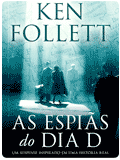
As espiãs do Dia D Ken Follett
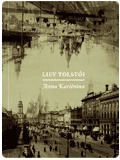
Anna Kariênina Liev Tolstói
Grandes Destinos Vários autores
Natália Rebelo Dias
Natália trabalhou como analista de logística durante a Graduação - era uma correria, mas ela gostava! Herdou a paixão por educação da avó, que também foi sua professora no colégio e, ao dar aulas para adolescentes na igreja, achou que esse também era o seu caminho. A história das pessoas atrai sua atenção: seus filmes e séries favoritos são sobre a complexidade humana. Curte muito viajar, comer, abastecer o guarda roupa e dar dicas sobre tudo! Suas grandes conquistas moram com ela: seu marido (Evandro), seu cachorro (Paul) e seus gatos (Cacau e Snow).
Atuação no DEA
Gestão e Desenvolvimento do Corpo Docente
60%
Avaliação do Aprendizado e Garantia da Qualidade
100%
Inovação e Tecnologias Educacionais
20%
#extrovertida#atenciosa#agitada
Ocupação
Analista Pl. de Ensino e Aprendizagem
Quando entrou no Insper
maio/2013
Formação
Pós-Graduada em Docência no Ensino Superior pelo Mackenzie
Bacharel em Letras (Português) pela Unimesp-FIG
Pontos fortes
Gestão da Aprendizagem, Desenvolvimento de docentes, Trabalho em equipe
Hobbies
Assistir séries, Navegar no Instagram, Ficar com seus pets, Gastronomia
Quando criança queria ser...
Atriz, Psicóloga, Advogada
Livros que lê
O Mundo de Sofia Jostein Gaarder
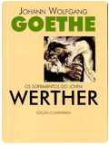
Os sofrimentos do Jovem Werther Johan Wolfgang von Goethe
O livro mais mal humorado da Bíblia Ed René Kivitz
Rodrigo Florenciano da Silva
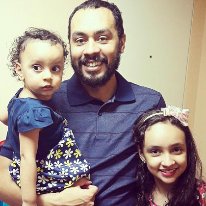
Rodrigo é entusiasta de métodos educacionais e acredita no potencial da educação quando integrada às tecnologias da internet. Estuda fatores cognitivos, gamification e usabilidade para desenvolver modelos projetuais úteis. Gosta de organizar coisas que tenham algum sentido e costuma ser bastante analítico em suas tarefas. Adora ser desafiado para uma partida de xadrez, não tanto quanto inventar novas brincadeiras com suas filhas.
Atuação no DEA
Gestão e Desenvolvimento do Corpo Docente
40%
Avaliação do Aprendizado e Garantia da Qualidade
20%
Inovação e Tecnologias Educacionais
100%
#quieto#estudioso#otimista
Ocupação
Analista Pl. de Web Design
Quando entrou no Insper
Setembro/2013
Formação
Bacharel em Design (ênfase em Marketing) pela ESPM
Pontos fortes
Comunicação visual, Experiência de usuário na web, Prototipagem
Hobbies
Jogar xadrez, Assistir documentários, Cuidar da horta/pomar
Quando criança queria ser...
Militar aeronáutico, Músico, Professor
Livros que lê
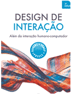
Design de interação Yvonne Rogers Helen Sharp
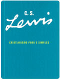
Cristianismo Puro e Simples C. S. Lewis
História do Design Gráfico Philip B. Meggs
Silvia Fernanda Corrêa
Silvia já foi programadora e analista de banco de dados, mas há mais de dez anos trabalha como designer instrucional desenvolvendo cursos online e recursos digitais. É apaixonada pela língua e sua manifestação nos diferentes gêneros do discurso. Para ela, forma e conteúdo têm igual valor. Gosta de cheirar livros e chora quando vê um prédio velho ou come Donuts. Faz aulas de costura e ballet clássico, e há pouco tempo entrou para um clube de leitura no coração do centro de São Paulo, outra de suas paixões.
Atuação no DEA
Gestão e Desenvolvimento do Corpo Docente
60%
Avaliação do Aprendizado e Garantia da Qualidade
20%
Inovação e Tecnologias Educacionais
100%
#crítica#caseira#sinestésica
Ocupação
Analista Sr. de Design Instrucional
Quando entrou no Insper
Maio/2011
Formação
Mestre em Letras (programa de Filologia e Língua Portuguesa) pela FFLCH-USP
Pós-Graduada em Psicopedagogia pela PUC-SP
Bacharel em Tecnologia e Mídias Digitais (ênfase em Educação a Distância) pela PUC-SP
Pontos fortes
Design Instrucional, Organização, Padronização
Hobbies
Ficar em casa, Ficar com suas gatas, Ler clássicos da literatura
Quando criança queria ser...
Empregada doméstica, Professora, Bióloga
Livros que lê
Os Miseráveis Victor Hugo
David Copperfield Joseph Dickens
Crime e Castigo Fiodor Dostoievski
Vinícius Cassio Barqueiro
Vinícius é otimista, animado e solícito. Tem bastante experiência no desenho instrucional de cursos presenciais, blended e a distância. Além do Insper, também trabalha como professor-tutor no Instituto Unibanco e como autor de materiais didáticos de Língua Portuguesa para o Sistema Mackenzie de Ensino. Conhecido por seus amigos como “poeta”, escreve periodicamente no blog Canto em Silêncio e tem contos publicados em livros e revistas. Ávido frequentador do Sesc, dedica grande parte do seu tempo livre curtindo lá suas duas maiores paixões: sua esposa Juliana e seu filho Tito.
Atuação no DEA
Gestão e Desenvolvimento do Corpo Docente
100%
Avaliação do Aprendizado e Garantia da Qualidade
40%
Inovação e Tecnologias Educacionais
60%
#proativo#criativo#sorridente
Ocupação
Analista Sr. de Design Instrucional
Quando entrou no Insper
Junho/2013
Formação
Especialista em Planejamento, Implementação e Gestão da Educação a Distância pela UFF
Licenciado em Letras (Português) pela FFLCH-USP
Bacharel em Letras (Linguística/Português) pela FFLCH-USP
Pontos fortes
Design Instrucional, Formação de Professores
Hobbies
Escrever, Ficar com a família, Frequentar o Sesc
Quando criança queria ser...
Arquiteto, Desenhista, Professor
Livros que lê
Ortodoxia G. K. Chesterton
Primeiras Estórias João Guimarães Rosa
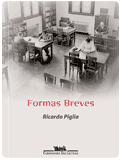
Formas Breves Ricardo Piglia
William de Almeida Delboni
William é extremamente solícito e focado em ajudar os outros. Sua preocupação em prestar sempre um atendimento de excelência fez com que se destacasse no Help Desk e passasse a compor a equipe do DEA, onde auxilia os professores no uso de tecnologia. É bem humorado, nerd e gosta de jogos de PC, seriados e filmes. Há pouco tempo descobriu mais uma paixão: cozinhar. Como mora muito longe, aproveita o tempo de translado para ler e estudar. Seu sonho é morar fora do Brasil, de preferência em diferentes países.
Atuação no DEA
Gestão e Desenvolvimento do Corpo Docente
20%
Avaliação do Aprendizado e Garantia da Qualidade
40%
Inovação e Tecnologias Educacionais
100%
#solícito#dedicado#nerd
Ocupação
Analista Jr. de Suporte
Quando entrou no Insper
Outubro/2012 (Help-Desk) e Maio/2014 (DEA)
Formação
Cursando tecnólogo em Informática para Negócios na FATEC
Pontos fortes
Suporte Técnico
Hobbies
Cozinhar, Assistir seriados, Games
Quando criança queria ser...
Médico, Bombeiro, Policial
Livros que lê
The Grand Design Stephen Hawking
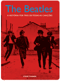
The Beatles, a história por trás de todas as canções Steve Turner
Como fazer uma empresa dar certo em um país incerto Endeavor
Avaliação Institucional Docente
Em parceria com as coordenações acadêmicas, o DEA passou a conduzir a Avaliação Anual do Corpo Docente (Avaliação Institucional). O processo, que antes era exclusivo dos professores de dedicação exclusiva por meio do sistema PID (Plano Individual de Desenvolvimento), passou a ser executado de uma nova maneira, envolvendo também professores de tempo parcial.
O novo formato, em caráter piloto, solicitou a cada professor um relatório de autoavaliação sobre sua atuação docente em 2015, com base nos Critérios de Excelência em Ensino, criados em 2014.
Após análise dos relatórios e de outras informações, como Planos de Aula e avaliações dos alunos, foram realizadas reuniões individuais de feedback com cada professor.
Em maio de 2016, consolidadas as melhorias na equipe DEA e finalizado o piloto de Avaliação Institucional Docente, a Frente de Gestão e Desenvolvimento do Corpo Docente verificou a necessidade de garantir, junto aos professores, melhor entendimento:
da proposta de valor da área de Desenvolvimento de Ensino e Aprendizagem (DEA);
das expectativas em relação ao trabalho docente, consolidadas nos Critérios de Excelência em Ensino; e
do processo de Avaliação Institucional Docente.
Para que esse entendimento fosse efetivo, o DEA avaliou ser etapa fundamental aproximar-se ainda mais do corpo docente, conhecendo de perto suas reais necessidades e dificuldades. Assim, surgiu a ideia de realizar conversas individualizadas com cada professor, iniciativa que foi denominada Interação 121 (one to one).
Objetivos
A Interação 121 foi realizada com vistas a:
Garantir que os professores do Insper compreendam os Critérios de Excelência em Ensino no Insper, para execução em sua prática docente;
Explorar a proposta de valor das iniciativas de desenvolvimento docente, sobretudo o processo de avaliação institucional anual;
Identificar oportunidades de melhoria no processo de ensino e aprendizagem praticado no Insper;
Estreitar os laços de confiança e empatia entre a equipe de Desenvolvimento de Ensino e Aprendizagem (DEA) e o corpo docente do Insper.